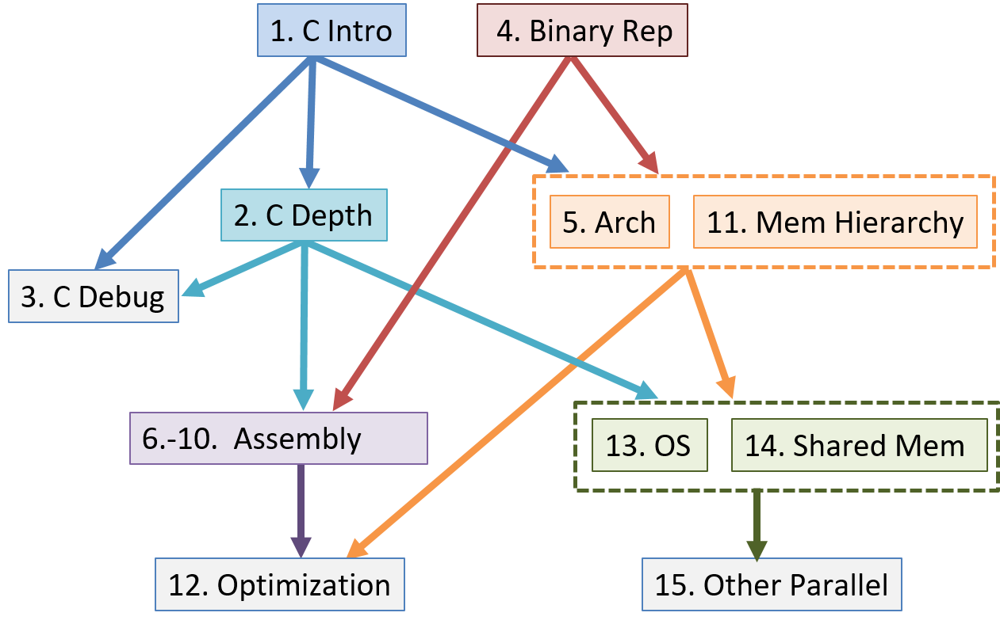

Lời nói đầu
Trong thế giới ngày nay, người ta rất chú trọng vào việc học lập trình, và lập trình được coi như một tấm vé vàng dẫn đến cuộc sống thành công. Bất chấp sự nở rộ của các bootcamp và việc lập trình được đưa vào giảng dạy ngay từ bậc tiểu học, bản thân chiếc máy tính lại thường bị xem như một yếu tố thứ yếu --- nó ngày càng trở nên vô hình trong các cuộc thảo luận về việc đào tạo thế hệ các nhà khoa học máy tính tiếp theo.
Mục đích của cuốn sách này là mang đến cho độc giả một phần giới thiệu nhẹ nhàng, dễ tiếp cận về hệ thống máy tính. Để viết được những chương trình hiệu quả, lập trình viên phải hiểu rõ các hệ thống con và kiến trúc nền tảng của máy tính. Tuy nhiên, chi phí của các sách giáo khoa hiện đại thường hạn chế khả năng tiếp cận của chúng đối với nhóm sinh viên có đủ điều kiện chi trả. Cuốn sách giáo khoa trực tuyến miễn phí này mong muốn giúp cho mọi người đều có thể tiếp cận các khái niệm về hệ thống máy tính. Sách nhắm đến đối tượng sinh viên có kiến thức nhập môn về khoa học máy tính và đã quen thuộc phần nào với Python. Nếu bạn đang tìm kiếm một cuốn sách miễn phí để tìm hiểu các nguyên tắc máy tính cơ bản bằng Python, chúng tôi khuyến khích bạn đọc How To Think Like a Computer Scientist with Python trước.
Nay Lập trình mới hỏi han,
Miền sâu Hệ thống có ai dám vào?
Lập trình hỏi, Sách xin trao,
"Biển sâu mời gọi, ngại nào không vô!"
Cuốn sách này nói về cái gì
Cuốn sách của chúng tôi có tựa đề Dive into Systems (Đắm mình vào Hệ thống) và được dùng như một phần giới thiệu nhẹ nhàng về các chủ đề trong hệ thống máy tính, bao gồm C programming ("lập trình C"), các nguyên tắc cơ bản về architecture ("kiến trúc"), assembly language ("hợp ngữ"), và multithreading ("đa luồng"). Phép ẩn dụ về đại dương rất phù hợp với hệ thống máy tính. Giống như sự sống hiện đại được cho là bắt nguồn từ sâu thẳm của đại dương nguyên thủy, lập trình hiện đại cũng bắt nguồn từ việc thiết kế và xây dựng kiến trúc máy tính thời kỳ đầu. Những lập trình viên đầu tiên đã nghiên cứu sơ đồ phần cứng của những chiếc máy tính đầu tiên để tạo ra các chương trình đầu tiên.
Tuy nhiên, khi sự sống (và ngành tính toán) bắt đầu rời xa đại dương nơi chúng xuất hiện, đại dương dần bị coi là một nơi đáng sợ và hiểm nguy, nơi cư ngụ của những loài quái vật. Các nhà hàng hải cổ đại thường vẽ hình những con thủy quái và các sinh vật thần thoại khác vào những vùng biển chưa được khám phá trên bản đồ. Nơi đây có rồng, dòng chữ sẽ cảnh báo. Tương tự như vậy, khi ngành tính toán ngày càng đi xa khỏi nguồn gốc cấp máy của nó, các chủ đề về hệ thống máy tính thường trở thành những "con rồng" của riêng nhiều sinh viên ngành tính toán.
Khi viết cuốn sách này, chúng tôi hy vọng sẽ khuyến khích sinh viên thực hiện một cú lặn nhẹ nhàng vào các chủ đề hệ thống máy tính. Mặc dù biển cả trông có vẻ tối tăm và nguy hiểm khi nhìn từ trên cao, nhưng có cả một thế giới tươi đẹp và diệu kỳ đang chờ được khám phá bởi những ai chọn nhìn xuống ngay bên dưới bề mặt. Cũng như vậy, một sinh viên có thể có được sự trân trọng lớn hơn đối với ngành tính toán bằng cách nhìn xuống bên dưới đoạn code và xem xét rạn san hô architecture bên dưới.
Chúng tôi không cố gắng ném bạn ra giữa đại dương bao la. Cuốn sách của chúng tôi chỉ giả định người đọc có kiến thức nền tảng của một môn Khoa học Máy tính năm nhất và được thiết kế để trở thành lần tiếp xúc đầu tiên với nhiều chủ đề hệ thống máy tính. Chúng tôi bao quát các chủ đề như C programming, logic gates ("cổng logic"), binary ("hệ nhị phân"), assembly, memory hierarchy ("hệ thống phân cấp bộ nhớ"), threading, và parallelism ("tính toán song song"). Các chương của chúng tôi được viết để độc lập với nhau nhất có thể, với mục tiêu có thể áp dụng rộng rãi cho nhiều khóa học khác nhau.
Cuối cùng, một mục tiêu lớn của chúng tôi khi viết cuốn sách này là nó phải được cung cấp miễn phí. Chúng tôi muốn cuốn sách của mình là một tài liệu sống, được cộng đồng ngành tính toán bình duyệt (peer reviewed), và phát triển khi lĩnh vực của chúng ta tiếp tục phát triển. Nếu bạn có phản hồi cho chúng tôi, xin vui lòng gửi cho chúng tôi một vài dòng. Chúng tôi rất mong nhận được tin từ bạn!
Các cách sử dụng cuốn sách này
Sách giáo khoa của chúng tôi bao quát một loạt các chủ đề liên quan đến hệ thống máy tính, đặc biệt nhắm đến các khóa học cấp độ trung cấp như giới thiệu về hệ thống máy tính hoặc tổ chức máy tính. Sách cũng có thể được sử dụng để cung cấp tài liệu tham khảo nền tảng cho các khóa học cấp cao hơn như hệ điều hành, trình biên dịch, tính toán song song và phân tán, và kiến trúc máy tính.
Sách giáo khoa này không được thiết kế để bao quát toàn bộ tất cả các chủ đề hệ thống. Sách không bao gồm các chủ đề nâng cao hoặc đầy đủ về hệ điều hành, kiến trúc máy tính, hoặc tính toán song song và phân tán, cũng không được thiết kế để thay thế cho các sách giáo khoa chuyên sâu về các chủ đề này trong các khóa học cấp cao hơn. Thay vào đó, sách tập trung vào việc giới thiệu về hệ thống máy tính, các chủ đề chung trong hệ thống trong bối cảnh tìm hiểu cách một máy tính chạy một chương trình, và cách thiết kế chương trình để chạy hiệu quả trên các hệ thống. Phạm vi chủ đề cung cấp một nền tảng kiến thức và bộ kỹ năng chung cho việc nghiên cứu nâng cao hơn về các chủ đề hệ thống.
Các chủ đề trong sách của chúng tôi có thể được xem như một lát cắt dọc qua một chiếc máy tính. Ở lớp thấp nhất, chúng tôi thảo luận về biểu diễn binary của chương trình và các mạch được thiết kế để lưu trữ và thực thi chương trình, xây dựng một CPU ("đơn vị xử lý trung tâm") đơn giản từ các logic gates cơ bản có thể thực thi các chỉ thị chương trình. Ở lớp tiếp theo, chúng tôi giới thiệu về operating system ("hệ điều hành"), tập trung vào sự hỗ trợ của nó cho việc chạy chương trình và quản lý phần cứng máy tính, đặc biệt là các cơ chế thực hiện multiprogramming ("đa chương") và hỗ trợ virtual memory ("bộ nhớ ảo"). Ở lớp cao nhất, chúng tôi trình bày ngôn ngữ C programming và cách nó ánh xạ tới code cấp thấp, cách thiết kế code hiệu quả, các tối ưu hóa của compiler ("trình biên dịch"), và tính toán song song. Một người đọc toàn bộ cuốn sách sẽ có được sự hiểu biết cơ bản về cách một chương trình viết bằng C (và Pthreads) thực thi trên máy tính và, dựa trên sự hiểu biết này, sẽ biết một số cách để thay đổi cấu trúc chương trình của mình nhằm cải thiện hiệu suất của nó.
Mặc dù toàn bộ cuốn sách cung cấp một lát cắt dọc qua máy tính, các chương sách được viết độc lập nhất có thể để giảng viên có thể kết hợp và lựa chọn các chương cho nhu cầu cụ thể của họ. Sơ đồ phụ thuộc giữa các chương được hiển thị bên dưới, mặc dù các phần riêng lẻ trong các chương có thể không có hệ thống phụ thuộc sâu như toàn bộ chương.

Tóm tắt nội dung các chương
-
Chương 0, Giới thiệu: Giới thiệu về hệ thống máy tính và một số mẹo để đọc cuốn sách này.
-
Chương 1, Giới thiệu về Lập trình C: Bao quát các kiến thức cơ bản về
C programming, bao gồm cả việc biên dịch và chạy các chương trình C. Chúng tôi giả định người đọc cuốn sách này đã có kiến thức nhập môn về lập trình bằng một ngôn ngữ lập trình nào đó. Chúng tôi so sánh cú pháp C với cú pháp Python để những độc giả quen thuộc với Python có thể thấy cách chuyển đổi. Tuy nhiên, kinh nghiệm lập trình Python không phải là điều kiện cần thiết để đọc hay hiểu chương này. -
Chương 2, Tìm hiểu sâu hơn về C: Bao quát hầu hết ngôn ngữ C, đặc biệt là
pointers("con trỏ") vàdynamic memory("bộ nhớ động"). Chúng tôi cũng trình bày chi tiết hơn về các chủ đề từ Chương 1 và thảo luận về một số tính năng C nâng cao. -
Chương 3, Các công cụ Gỡ lỗi C: Bao quát các công cụ gỡ lỗi C phổ biến (
GDBvàValgrind) và minh họa cách chúng có thể được sử dụng để gỡ lỗi nhiều loại ứng dụng khác nhau. -
Chương 4, Hệ nhị phân và Biểu diễn Dữ liệu: Bao quát việc code hóa dữ liệu thành
binary, biểu diễnbinarycủa các kiểu dữ liệu trong C, các phép toán số học trên dữ liệubinary, và tràn số học (arithmetic overflow). -
Chương 5, Cổng logic, Mạch và Kiến trúc Máy tính: Bao quát
von Neumann architecture("kiến trúc von Neumann") từ cáclogic gatesđến việc xây dựng mộtCPUcơ bản. Chúng tôi mô tả đặc điểm của việc thực thi theo xung nhịp (clock-driven execution) và các giai đoạn thực thi chỉ thị thông qua các mạch số học, lưu trữ và điều khiển. Chúng tôi cũng giới thiệu ngắn gọn vềpipelining("đường ống"), một số tính năngarchitecturehiện đại, và lịch sử ngắn gọn củaarchitecturemáy tính. -
Chương 6-10, Lập trình Assembly: Bao quát việc dịch code C sang
assemblytừ các biểu thức số học cơ bản đến các hàm, stack, và truy cập mảng vàstruct. Trong ba chương riêng biệt, chúng tôi bao quátassemblytừ bainstruction set architectures("kiến trúc tập lệnh") khác nhau:x8632-bit,x8664-bit, vàARM64-bit. -
Chương 11, Lưu trữ và Hệ thống phân cấp Bộ nhớ: Bao quát các thiết bị lưu trữ,
memory hierarchyvà ảnh hưởng của nó đến hiệu suất chương trình, tính cục bộ (locality),caching("lưu trữ đệm"), và công cụ phân tíchCachegrind. -
Chương 12, Tối ưu hóa Mã: Bao quát các tối ưu hóa của
compiler, thiết kế chương trình có tính đến hiệu suất, các mẹo để tối ưu hóa code, và đo lường định lượng hiệu suất của một chương trình. -
Chương 13, Hệ điều hành: Bao quát các khái niệm trừu tượng cốt lõi của
operating systemvà các cơ chế đằng sau chúng. Chúng tôi chủ yếu tập trung vào các tiến trình (processes),virtual memory, vàinterprocess communication (IPC)("giao tiếp liên tiến trình"). -
Chương 14, Tính toán Song song trên Bộ nhớ chia sẻ: Bao quát các bộ xử lý đa lõi,
threads("luồng") và lập trìnhPthreads,synchronization("đồng bộ hóa"),race conditions("tình trạng tranh chấp"), vàdeadlock("khóa chết"). Chương này bao gồm một số chủ đề nâng cao về đo lường hiệu suất song song (speed-up,efficiency, định luật Amdahl),thread safety("an toàn luồng"), vàcache coherence("tính nhất quán của bộ đệm"). -
Chương 15, Các Hệ thống Song song và Mô hình Lập trình Nâng cao: Giới thiệu những kiến thức cơ bản về
distributed memory systems("hệ thống bộ nhớ phân tán") vàMessage Passing Interface (MPI),hardware accelerators("bộ tăng tốc phần cứng") vàCUDA, cùng vớicloud computing("điện toán đám mây") vàMapReduce.
Ví dụ về cách sử dụng cuốn sách này
Dive into Systems có thể được sử dụng như một sách giáo khoa chính cho các khóa học giới thiệu về các chủ đề hệ thống máy tính, hoặc các chương riêng lẻ có thể được sử dụng để cung cấp thông tin nền tảng trong các khóa học chuyên sâu hơn.
Ví dụ từ hai trường của các tác giả, chúng tôi đã và đang sử dụng nó làm sách giáo khoa chính cho hai khóa học cấp độ trung cấp khác nhau:
- Giới thiệu về Hệ thống Máy tính tại Swarthmore College. Thứ tự chương: 4, 1 (một phần 3), 5, 6, 7, 10, 2 (thêm một phần 3), 11, 13, 14.
- Tổ chức Máy tính tại West Point. Thứ tự chương: 1, 4, 2 (một phần 3), 6, 7, 10, 11, 12, 13, 14, 15.
Ngoài ra, chúng tôi sử dụng các chương riêng lẻ làm tài liệu đọc nền tảng trong nhiều khóa học cấp cao hơn, bao gồm:
| Chủ đề môn học cấp cao hơn | Các chương đọc tham khảo |
|---|---|
| Kiến trúc (Architecture) | 5, 11 |
| Trình biên dịch (Compilers) | 6, 7, 8, 9, 10, 11, 12 |
| Hệ quản trị Cơ sở dữ liệu | 11, 14, 15 |
| Mạng máy tính (Networking) | 4, 13, 14 |
| Hệ điều hành (Operating Systems) | 11, 13, 14 |
| Hệ thống Song song và Phân tán | 11, 13, 14, 15 |
Cuối cùng, Chương 2 và 3 được sử dụng làm tài liệu tham khảo về lập trình và gỡ lỗi C trong nhiều khóa học của chúng tôi.
Đọc online bản gốc luôn nha
Phiên bản trực tuyến miễn phí của sách giáo khoa của chúng tôi có tại https://diveintosystems.org/